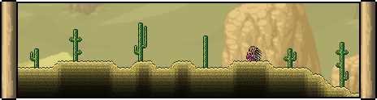

The Desert is a biome which consists predominantly of Sand Blocks and cacti. Every world contains a main Desert area (which houses the Underground Desert biome beneath it) and, possibly, additional small Desert patches called Dunes (which only contain layers of Sand Blocks on the surface and do not have underground parts). Pyramids and small pools of water can rarely appear in Dunes. Objects in the Desert appear slightly hazy due to heat distortion, and water has a unique turquoise color. A Desert can also be generated with an Oasis mini-biome, featuring Palm trees and a large pool of water in the center.
Blocks or Sandstone Blocks,[1] causing the water and background to change. Cacti and Desert enemies can spawn on even a single block of sand, however. Deserts are overridden by most other biomes, including the Ocean. Rain will occur in Deserts just as in any other surface biome. A Sandstorm may occur when wind speed is over 30 mph, which causes special enemies to spawn and pushes the player in the direction of the wind.
The Desert can be infected by the Corruption, the Crimson, or The Hallow. Corruption/Crimson Deserts may already spawn upon world creation. The enemies from the main biome (the evil biome or the Hallow) can spawn in an infected Desert alongside the normal Desert enemies (except for Mummies and Sand Sharks, which have special biome-specific variants), and the music from the main biome is played. The sand in an infected Desert is replaced by Ebonsand, Crimsand, or Pearlsand Blocks, respectively. Although their color will change, cacti still drop Cactus when cut, and Waterleaf are also able to grow in a Hallowed Desert.